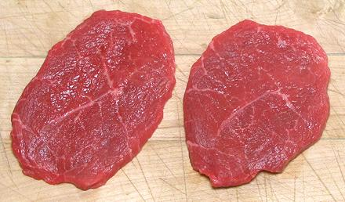

The Chuck Tender #116B (1# to 3#) is a narrow muscle, just above the Chuck Underblade, that superficially resembles the Tenderloin at the other end of the beast, thus the name. The "tender" part is purely marketing talk, as it isn't significantly more tender than the rest of the chuck. While not nearly as tender as Tenderloin, it does have much better flavor than that bland cut. The photo specimen was 10 x 4-1/2 x 2-3/4 inches and weighed 3.03 pounds. On the shelf at this time were specimens weighing from 2-1/2 pounds to 4-1/4 pounds.
 This photo shows two steaks cut from the Mock Tender. They were described as "Thin cut", and that's the way you want them. Marketeers may tell you thicker cuts are just like medallions from the Tenderloin, but they're not - they're as tough as any other part of the chuck. The photo specimens were about 3-1/2 inched in diameter and 3/8 inch thick, weighing about 1-1/4 ounces each. Stupidly priced at 2013 US $9.99 / pound, but buy one tray and you got another "free", so effectively $5.00 / pound.
Cooking: These pan fry just fine, have good flavor and
are quite edible if thin and you don't overcook them.
CAUTION: don't just toss them into the pan as is. You need
to make a cut from the center all the way out through the edge, just like
you would for slices of Bologna. If you don't, they will turn into domes
almost instantly. Cut, they will instead open up into an elongated form.
Fried, these would make excellent sandwich meat.
More on Cuts of Beef.